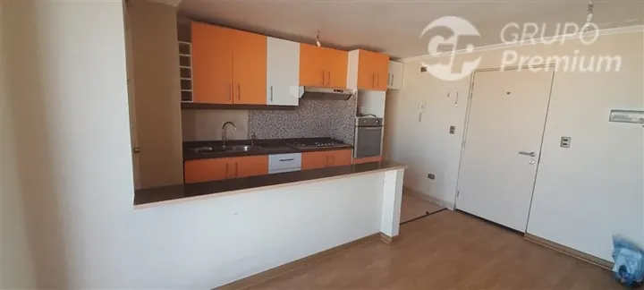
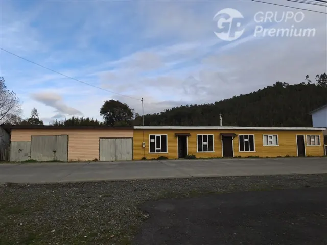
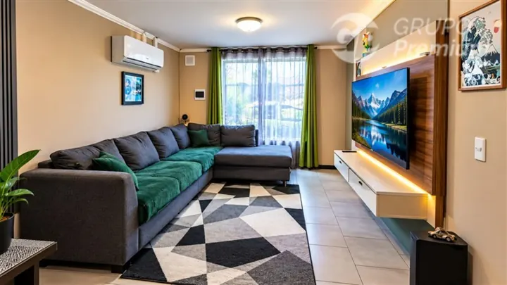
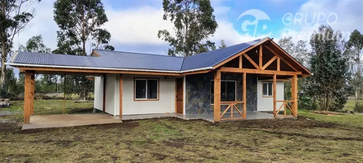
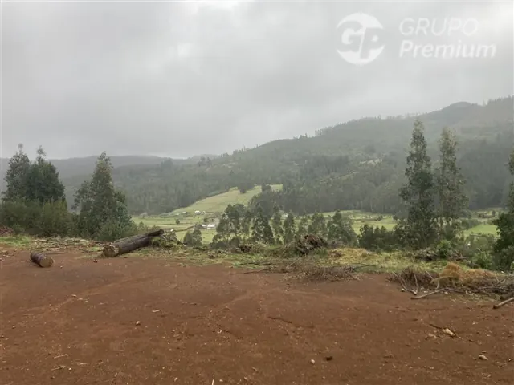
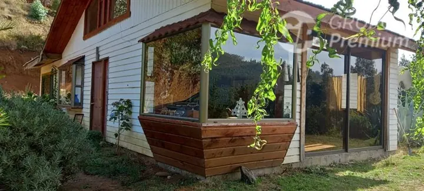
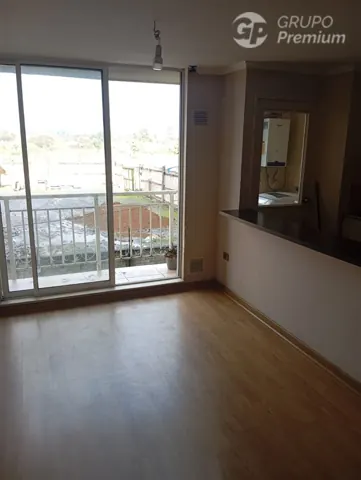
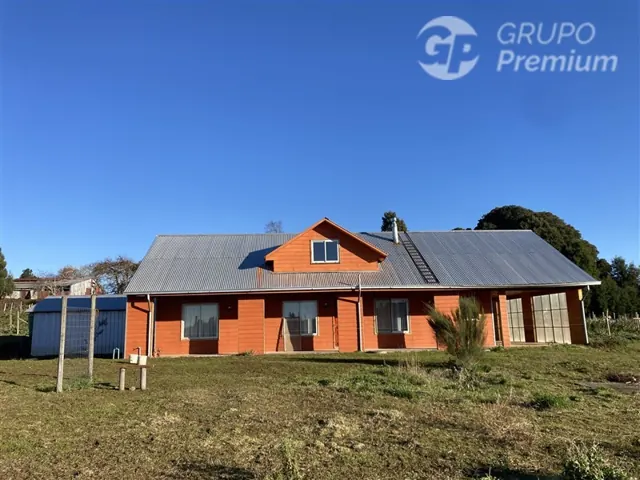

VENTA · CÓD. 79157
Departamento en Temuco
Detras de la planta coca cola
$ 60.000.000
2 dormitorios · 1 baño
ANDRÉS LAGOS · GRUPO PREMIUM
Agente inmobiliario de Grupo Premium Propiedades y contacto profesional de LOGOS Arquitectura. Las propiedades, asesorías y gestiones inmobiliarias se canalizan a través de Grupo Premium Propiedades.
Atención inmobiliaria a través de Grupo Premium Propiedades.
LOGOS facilita este contacto profesional.

CARTERA DE ANDRÉS LAGOS
Conoce las propiedades a cargo de Andrés Lagos como agente de Grupo Premium Propiedades. Accede a la ficha oficial o consulta directamente por el inmueble que te interesa.
8 propiedades en cartera · Selección revisada el 16 de octubre de 2026.

VENTA · CÓD. 79157
Detras de la planta coca cola
$ 60.000.000
2 dormitorios · 1 baño

VENTA · CÓD. 79156
General ibañez 075
$ 42.000.000
3 dormitorios · 1 baño

VENTA · CÓD. 79155
Pasaje perqueleuquen 351, villa brisas de labranza
$ 110.000.000
2 dormitorios · 2 baños · 147 m² de terreno

VENTA · CÓD. 78690
Km 20 ruta s-65 pitrufquen-villarrica
$ 105.000.000
3 dormitorios · 2 baños

VENTA · CÓD. 78218
Queule sector piren bajo
$ 22.000.000
5.000 m² de terreno

VENTA · CÓD. 78215
Queule, sector piren bajo
$ 110.000.000
5 dormitorios · 1 baño · 5.000 m² de terreno

VENTA · CÓD. 77555
Detrás de empresa coca cola, paralelo a recabarren
$ 68.000.000
3 dormitorios · 1 baño · 52 m² útiles

VENTA · CÓD. 77478
Ruta s60 km 31
$ 150.000.000
4 dormitorios · 2 baños · 5.000 m² de terreno
Precios en pesos chilenos según las fichas consultadas el 16 de octubre de 2026. Esta selección se actualiza manualmente. Confirma precio, características y disponibilidad en Grupo Premium Propiedades antes de avanzar.
01 / SERVICIOS
Andrés orienta tu consulta como agente de Grupo Premium Propiedades. El alcance y las condiciones de cada gestión se acuerdan a través de Grupo Premium.
Comparte las características del inmueble y tu objetivo para conversar sobre evaluación comercial y condiciones del encargo.
Define zona, presupuesto y necesidades para enfocar la búsqueda y las alternativas que quieres evaluar.
Aclara las tareas, los canales de comunicación, los honorarios y las responsabilidades antes de comenzar.
02 / CÓMO TRABAJAMOS
El contacto inicial es con Andrés Lagos. La asesoría y la gestión se desarrollan a través de Grupo Premium Propiedades, según el alcance y las condiciones del encargo.
Describe tu situación, ubicación y lo que necesitas resolver.
Andrés revisa tu consulta dentro de su trabajo como agente de Grupo Premium Propiedades.
Acuerda con Grupo Premium Propiedades el alcance, los honorarios y las condiciones de la gestión.
03 / PREPARA TU CONSULTA
Para comenzar, ten a mano esta información:
Si falta algún antecedente, indícalo. Puedes consultar igualmente.
04 / PREGUNTAS FRECUENTES
Andrés Lagos es un contacto profesional de LOGOS Arquitectura y agente de Grupo Premium Propiedades. Las propiedades, asesorías y gestiones de esta sección se canalizan a través de Grupo Premium Propiedades.
No. Es un antecedente para decidir. El resultado depende del inmueble, el mercado y las condiciones de la operación.
No existe un plazo único. Conviene acordar el seguimiento de la gestión y revisar las condiciones según la respuesta del mercado.
Honorarios, responsabilidades, vigencia del encargo, exclusividad si corresponde y cómo se informará el avance.
EXPLORA OTRAS ÁREAS
CONTACTA A ANDRÉS LAGOS